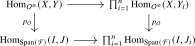
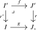
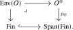
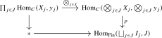

The envelope construction will also let us relate our definition of an \(\infty \)-operad to Lurie’s. To treat the two definitions together, we work over span categories that include both \(\Span (\Fin )\) and \(\Fin _* \simeq \Span (\Fin ,\inj ,\all )\). This is a special case of the envelope construction for algebraic patterns in [Barkan et al. (2022)].
Convention 19.3.1. Throughout this section, we fix an adequate triple \(\Ff = (F,F_L,F_R)\) which satisfies the following three conditions:
- (1)
-
The \(\infty \)-category \(F\) is extensive in the sense of Definition 13.3.1.
- (2)
-
The classes \(F_L\) and \(F_R\) are closed under finite coproducts.
- (3)
-
For every \(I\in F\), the morphism \(\emptyset \to I\) is contained in \(F_L\).
In particular, \(F_L\) contains every coproduct inclusion \(I_i \hookrightarrow \bigsqcup _{j=1}^n I_j\), since this is the coproduct of \(\id _{I_i}\) with the morphisms \(\emptyset \to I_j\) for \(j \neq i\).
Example 19.3.2. The main two examples are the adequate triples \((\Fin ,\Fin ,\Fin )\) and \((\Fin ,\Fin _{\inj },\Fin )\), where \(\Fin _{\inj } \subseteq \Fin \) is the wide subcategory of injections.
The hypotheses also apply to the following examples from equivariant and global homotopy theory.
Example 19.3.3. More generally, let \(G\) be a finite group and let \(\Fin _G\) be the category of finite \(G\)-sets. Then the adequate triples \((\Fin _G,\Fin _G,\Fin _G)\) and \((\Fin _G,(\Fin _G)_{\inj }, \Fin _G)\) are examples.
Example 19.3.4. Let \(\FinGrpd \subseteq \Grpd \subseteq \Cat \) denote the full (2,1)-category of finite groupoids. Under the fully faithful inclusion \(\Grpd \hookrightarrow \An \), we may identify this with the full subcategory of animae spanned by objects of the form \(\bigsqcup _{i=1}^n BG_i\), the finite disjoint unions of classifying animae of finite groups \(G_i\). Then \((\FinGrpd ,\FinGrpd ,\FinGrpd )\) satisfies the conditions of Convention 19.3.1.
Definition 19.3.5 (\(\Ff \)-monoid). Let \(\Ff = (F,F_L,F_R)\) be an adequate triple satisfying the conditions of Convention 19.3.1.
- (1)
-
Given an \(\infty \)-category \(C\) with finite products, we say that a functor \(M\colon F_L\catop \to C\) satisfies the Segal condition if for every \(n\geq 0\) and all objects \(I_1, \dots , I_n \in F\), the maps \(e_i\colon I_i \hookrightarrow \bigsqcup _{j=1}^n I_j\) induce an isomorphism \[ (e_i^*)_{i=1}^n \colon M(\bigsqcup _{j=1}^n I_j) \iso \prod _{i=1}^n M(I_i). \]
- (2)
-
For \(C\) with finite products, we define an \(\Ff \)-monoid in \(C\) to be a functor \[ M\colon \Span (\Ff ) \to C \] such that \(M\vert _{F_L\catop }\) satisfies the Segal condition. We denote by \[ \Mon _{\Ff }(C) \quad \subseteq \quad \Fun (\Span (\Ff ), C) \] the full subcategory spanned by the \(\Ff \)-monoids.
Remark 19.3.6. If \(F_L\) also contains the fold maps \(I\sqcup I\to I\), then \((F,F_L,F_R)\) is weakly extensive by Lemma 13.3.4. In this case \(F_L\) admits finite coproducts, so the Segal condition on a functor \(F_L\catop \to C\) is equivalent to preservation of finite products. By Lemma 13.3.8, the \(\Ff \)-monoids in \(C\) are likewise precisely the finite-product-preserving functors \(\Span (\Ff )\to C\).
Example 19.3.7. For \(\Ff = (\Fin ,\Fin ,\Fin )\), the \(\Ff \)-monoids are precisely the commutative monoids from Definition 5.3.4.
For \(\Ff = (\Fin ,\Fin _{\inj },\Fin )\), the \(\infty \)-category \(\Span (\Fin ,\inj ,\all )\) is equivalent to the (classical) category \(\Fin _*\) of finite pointed sets, and the resulting \(\Ff \)-monoids are precisely the commutative monoids as defined by Lurie (2017). By Proposition 5.3.9, restriction along the inclusion induces an equivalence between these two definitions.
An \(\Ff \)-monoidal \(\infty \)-category is an \(\Ff \)-monoid in \(\Cat _{\infty }\). By straightening-unstraightening, these form a full subcategory of \(\Cocart (\Span (\Ff ))\); we write \(p_C\colon C^\otimes \to \Span (\Ff )\) for the unstraightening of \(C\).
Recall from Proposition 19.1.10 that \(\Span (\Ff )\) has a factorization system \((\Ll ,\Rr )\), where \(\Ll =F_L\catop \) consists of the backwards spans and \(\Rr =F_R\) of the forward spans.
Definition 19.3.8 (\(\Ff \)-\(\infty \)-operad). Let \(\Ff = (F,F_L,F_R)\) be an adequate triple satisfying the conditions of Convention 19.3.1. An \(\Ff \)-\(\infty \)-operad is a pair \(\Oo = (\Oo ^{\otimes },p_{\Oo })\) consisting of an \(\infty \)-category \(\Oo ^{\otimes }\) and a functor \(p_{\Oo }\colon \Oo ^{\otimes } \to \Span (\Ff )\) satisfying the following three conditions:
- (1)
-
The functor \(p_{\Oo }\) is an \(\Ll \)-cocartesian fibration;
- (2)
-
The straightening \(F_L\catop \to \Cat _{\infty }\) of the resulting cocartesian fibration \(\Oo ^{\otimes }\vert _{F_L\catop } \to F_L\catop \) satisfies the Segal condition: for all \(J_1, \dots , J_n \in F\) we have \[ \Oo ^{\otimes }_{\bigsqcup _{i=1}^n J_i} \iso \prod _{i=1}^n \Oo ^{\otimes }_{J_i}. \]
- (3)
-
Consider objects \(I, J_1, \dots , J_n \in F\), \(X \in \Oo ^{\otimes }_I\) and \(Y \in \Oo ^{\otimes }_J\) with \(J := \bigsqcup _{i=1}^n J_i\). Let \(Y \to Y_i\) be cocartesian lifts of the backwards maps \(J \hookleftarrow J_i \xrightarrow {=} J_i\). Then the induced commutative square

is a pullback square.
Given another \(\Ff \)-\(\infty \)-operad \(\Pp = (\Pp ^{\otimes },p_{\Pp })\), a morphism of \(\Ff \)-\(\infty \)-operads is a \(\Ll \)-cocartesian functor \(f\colon \Oo ^{\otimes } \to \Pp ^{\otimes }\) over \(\Span (\Ff )\). We denote by \[ \Op _{\Ff } \quad \subseteq \quad (\Cat _\infty )^{\Ll \mathrm {-cocart}}_{/\Span (\Ff )} \] the full subcategory spanned by the \(\Ff \)-\(\infty \)-operads.
Construction 19.3.9. We construct a functor \[ \Mm \colon \Mon _{\Ff }(\Cat _{\infty }) \to \Op _{\Ff }. \] Given an \(\Ff \)-monoidal \(\infty \)-category \(C\), its unstraightening \(p_C\colon C^\otimes \to \Span (\Ff )\) satisfies conditions (1) and (2) of Definition 19.3.8 by definition. For (3), take \(X\in C^\otimes _I\), \(Y\in C^\otimes _J\), and a span \(\alpha \colon I\to J\). Cocartesian transport identifies \(\Hom _{C^\otimes }^{\alpha }(X,Y)\) with \(\Hom _{C^\otimes _J}(\alpha _!X,Y)\), which splits as a product by (2), just as in the proof of Lemma 14.4.4. A morphism of \(\Ff \)-monoids unstraightens to a cocartesian functor, so in particular preserves the lifts over \(\Ll \). Thus unstraightening defines \(\Mm \).
Proposition 19.3.10. The functor \(\Mm \colon \Mon _{\Ff }(\Cat _{\infty }) \to \Op _{\Ff }\) admits a left adjoint \[ \Env _{\Ff }\colon \Op _{\Ff } \to \Mon _{\Ff }(\Cat _{\infty }), \] called the \(\Ff \)-operadic envelope construction.
Proof. By Corollary 19.2.8, the free \(\Rr \)-cocartesian completion is left adjoint to the forgetful functor from cocartesian fibrations to \(\Ll \)-cocartesian fibrations over \(\Span (\Ff )\). The functor \(\Mm \) is the restriction of this forgetful functor to the full subcategories of \(\Ff \)-monoidal \(\infty \)-categories and \(\Ff \)-\(\infty \)-operads. It therefore suffices to show that, for an \(\Ff \)-\(\infty \)-operad \(\Oo \), the straightening of \(E_{\Rr }(p_{\Oo })\) satisfies the Segal condition.
By the characterization of cocartesian morphisms in Proposition 19.2.7, its straightening takes the following form:
- On objects, it sends \(I \in F\) to the pullback \(\infty \)-category \((F_R)_{/I} \times _{\Span (\Ff )} \Oo ^{\otimes }\).
- Given \(g\colon I\to J\) in \(F_L\), transport along the backwards span \(J\xleftarrow {g}I\xrightarrow {=}I\) sends \((X,r\colon J'\to J)\) to \((Y,r'\colon I'\to I)\), where and \(X\to Y\) is a \(p_{\Oo }\)-cocartesian lift of the backwards span \(J'\xleftarrow {f}I'\xrightarrow {=}I'\).

- Given \(g\colon I\to J\) in \(F_R\), transport along the forward span sends \((X,r\colon K\to I)\) to \((X,gr\colon K\to J)\).
In the backwards case, the pullback computes the composite span whose factorization is used in Proposition 19.2.7. In the forward case, the composite \(gr\) already belongs to \(F_R\), so its factorization has left factor \(\id _K\).
Let \(J=\bigsqcup _{i=1}^n J_i\). We must show that the Segal map \[ (F_R)_{/J}\times _{\Span (\Ff )}\Oo ^\otimes \longrightarrow \prod _{i=1}^n\bigl ((F_R)_{/J_i}\times _{\Span (\Ff )}\Oo ^\otimes \bigr ) \] is an equivalence. Extensivity gives \(F_{/J}\simeq \prod _i F_{/J_i}\), and this restricts to \[ (F_R)_{/J}\simeq \prod _{i=1}^n(F_R)_{/J_i}. \] Indeed, pullback along coproduct inclusions preserves membership in \(F_R\) by adequacy, since these inclusions lie in \(F_L\). Closure under finite coproducts gives the converse. This applies both to objects and to morphisms of the slices.
Given objects \((X_i,r_i\colon I_i\to J_i)\), take \(r=\bigsqcup _i r_i\) and choose \(X\in \Oo ^\otimes _{\bigsqcup _i I_i}\) corresponding to \((X_i)_i\) under condition (2) of Definition 19.3.8. Then \((X,r)\) maps to the given tuple, proving essential surjectivity.
For full faithfulness, consider \((X,r\colon I\to J)\) and \((X',r'\colon I'\to J)\), and denote their images by \((X_i,r_i\colon I_i\to J_i)\) and \((X'_i,r'_i\colon I'_i\to J_i)\). Since the map between the base slices is an equivalence, it suffices to check the map on hom animae over each morphism \(f\colon (I,r)\to (I',r')\) in \((F_R)_{/J}\). Writing \(f_i\colon I_i\to I'_i\) for its components, we have \[ \Hom _{\Oo ^\otimes }^{f}(X,X') \simeq \prod _{i=1}^n\Hom _{\Oo ^\otimes }^{f_i}(X_i,X'_i). \] Here condition (3) first gives the fibers of \(\Hom _{\Oo ^\otimes }(X,X'_i)\) over the spans \(I\leftarrow I_i\xrightarrow {f_i}I'_i\), and cocartesian transport along \(I\leftarrow I_i\xrightarrow {=}I_i\) gives the displayed product. These are precisely the fibers of the hom animae on the two sides, proving full faithfulness. □
Let us explicitly record the main example of the \(\Ff \)-operadic envelope construction:
Proposition 19.3.11. The multimorphism operad functor \(\Mm \colon \Cat _{\infty }^{\otimes } \to \Op _{\infty }\) admits a left adjoint \[ \Env \colon \Op _{\infty } \to \Cat _{\infty }^{\otimes }. \]
Proof. This is a special case of the previous proposition. For \(\Ff = (\Fin ,\Fin ,\Fin )\), Proposition 14.1.12 identifies the objects of \(\Op _{\Ff }\) with the \(\infty \)-operads from Definition 14.1.1, while Corollary 14.1.14 identifies the two notions of morphism. □
Corollary 19.3.12. Let \(\Oo \) be an \(\infty \)-operad and let \(C\) be a symmetric monoidal \(\infty \)-category. There is a natural equivalence \[ \Alg _{\Oo }(C) \simeq \Fun ^{\otimes }(\Env (\Oo ),C). \] In other words, an \(\Oo \)-algebra in \(C\) is equivalently a symmetric monoidal functor from the envelope of \(\Oo \) to \(C\).
Proof. Let \(E\) be an \(\infty \)-category. Using Lemma 14.4.13, the adjunction of Proposition 19.3.11, and currying, we obtain natural equivalences \begin {align*} \Hom _{\Cat _{\infty }}(E,\Alg _{\Oo }(C)) &\simeq \Hom _{\Op _\infty }(\Oo ,\Mm _{\Fun (E,C)}) \\ &\simeq \Map ^\otimes (\Env (\Oo ),\Fun (E,C)) \\ &\simeq \Hom _{\Cat _{\infty }}(E,\Fun ^\otimes (\Env (\Oo ),C)). \end {align*}
Here \(\Fun (E,C)\) carries the pointwise symmetric monoidal structure. Since these equivalences are natural in \(E\), the Yoneda lemma gives the claimed equivalence of \(\infty \)-categories. □
We refer to the symmetric monoidal \(\infty \)-category \(\Env (\Oo )\) as the envelope of the \(\infty \)-operad \(\Oo \). By construction, its total category is \(E_{\Rr }(p_{\Oo })\), and its underlying \(\infty \)-category is the fiber over \(\lra {1}\). This gives the pullback square

In particular, the objects of \(\Env (\Oo )\) are unordered tuples \(\{x_i\}_{i \in I}\) of colors of \(\Oo \).
Lemma 19.3.13. The monoidal unit of \(\Env (\Oo )\) is the empty tuple, and its tensor product is given by concatenation of unordered tuples: \[ \{x_i\}_{i \in I} \otimes \{y_j\}_{j \in J} \simeq \{x_i\}_{i \in I} \sqcup \{y_j\}_{j \in J}. \]
Proof. Under the Segal equivalence, the two tuples on the left determine the object of the fiber over \(\lra {2}\) indexed by their disjoint union \(I \sqcup J\). The tensor product is cocartesian transport of this object along the forward fold span \(\lra {2} \xleftarrow {=} \lra {2} \to \lra {1}\). By the forward-transport calculation in the proof of Proposition 19.3.10, this transport leaves the object of \(\Oo ^\otimes \) unchanged and postcomposes its indexing map with the fold map. The result is the concatenated tuple. The same calculation for the unique forward map \(\emptyset \to \lra {1}\) gives the empty tuple as the unit. □
Lemma 19.3.14. Let \(\Oo \) be an \(\infty \)-operad, and let \(\{x_i\}_{i \in I}\) and \(\{y_j\}_{j \in J}\) be objects of \(\Env (\Oo )\). Then there is a natural equivalence \[ \Hom _{\Env (\Oo )}(\{x_i\}_{i \in I}, \{y_j\}_{j \in J}) \simeq \coprod _{f\colon I \to J} \; \prod _{j \in J} \Oo (\{x_i\}_{i \in f^{-1}(j)}; y_j), \] where the coproduct ranges over all maps of finite sets \(f\colon I \to J\). In particular, for a single output color \(y \in \Oo ^{\simeq }\) there is a natural equivalence \[ \Hom _{\Env (\Oo )}(\{x_i\}_{i \in I}, y) \simeq \Oo (\{x_i\}_{i \in I}; y). \]
Proof. The pullback description of \(\Env (\Oo )\) identifies its hom anima with the pullback of \[ \Hom _{\Oo ^{\otimes }}(\{x_i\}_{i \in I}, \{y_j\}_{j \in J}) \longrightarrow \Hom _{\Span (\Fin )}(I,J) \] along the inclusion \(\Hom _{\Fin }(I,J)\hookrightarrow \Hom _{\Span (\Fin )}(I,J)\). It is therefore the coproduct of the fibers over the forward spans \(I\xleftarrow {=}I\xrightarrow {f}J\). Applying Lemma 14.1.10 to each such span gives the formula. The final statement is the case \(J=\lra {1}\). □
Lemma 19.3.15. The envelope \(\Env (\Comm )\) of the commutative \(\infty \)-operad is the category of finite sets, with monoidal structure given by disjoint union.
Proof. The total category of the terminal \(\infty \)-operad \(\Comm \) is \(\Span (\Fin )\) itself. The pullback description of the underlying category of the envelope therefore gives \(\Env (\Comm ) \simeq \Fin \), and Lemma 19.3.13 identifies the tensor product with disjoint union. □
Corollary 19.3.16. For every symmetric monoidal \(\infty \)-category \(C\), there is a natural equivalence \[ \CAlg (C)=\Alg _{\Comm }(C)\simeq \Fun ^{\otimes }(\Fin ,C), \] where \(\Fin \) carries the monoidal structure given by disjoint union.
Proof. Apply Corollary 19.3.12 with \(\Oo =\Comm \) and use Lemma 19.3.15. □
Thus the operadic definition of commutative algebras in Example 14.4.11 agrees with Definition 8.1.3.
Corollary 19.3.17. For a colored operad \(\Oo \), the \(\infty \)-categorical envelope of the associated \(\infty \)-operad is equivalent to the category underlying its classical envelope from Definition 12.3.3, compatibly with the symmetric monoidal structures and the maps to \((\Fin ,\amalg )\).
Proof. Both envelopes have unordered tuples of colors as objects, and Lemma 19.3.14 identifies their hom animae with the classical morphism sets of Definition 12.3.3. By Construction 14.2.3, composition of labeled forward spans is given by operadic substitution, as in the classical envelope. Both tensor products are given by concatenation, with unit, associativity, and symmetry maps induced by the corresponding bijections of indexing sets. These identifications therefore give a symmetric monoidal equivalence over \((\Fin ,\amalg )\). □
The envelopes of the \(\infty \)-operads governing associative algebras and modules are also 1-categories. We record them explicitly.
Example 19.3.18 (Envelopes for algebras and modules). All the following categories are symmetric monoidal under disjoint union.
- (1)
-
The envelope \(\Env (\Assoc )\) has finite sets as objects. Its morphisms \(S\to T\) are maps of finite sets together with a linear order on every fiber over \(t\in T\).
- (2)
-
The envelope \(\Env (\oLMod )\) has pairs \((S_A,S_M)\) of finite sets as objects. A morphism \((S_A,S_M)\to (T_A,T_M)\) is a map \[ f\colon S_A\sqcup S_M\longrightarrow T_A\sqcup T_M \] which restricts to a bijection \(S_M\to T_M\), together with a linear order on \(f^{-1}(t)\cap S_A\) for every \(t\in T_A\sqcup T_M\).
- (3)
-
The envelope \(\Env (\oMod )\) has the same objects and morphisms as in (2), but without the choices of linear orders.
These descriptions follow immediately from Lemma 19.3.14 and the multimorphism sets of \(\Assoc \), \(\oLMod \), and \(\oMod \).
By functoriality, any morphism of \(\infty \)-operads induces a symmetric monoidal functor on envelopes. In particular, the terminal morphism \(\Oo \to \Comm \) induces a symmetric monoidal functor \(\Env (\Oo ) \to \Env (\Comm ) \simeq (\Fin ,\amalg )\). This functor sends a tuple to its indexing set. Its fiber over a singleton recovers \(U(\Oo )\), and Lemma 19.3.14 recovers the multimorphisms as maps from tuples to singleton tuples. The following proposition shows that the envelope, together with this functor, determines \(\Oo \).
Proposition 19.3.19 ([Barkan et al. (2022), Example 4.3.1 and Observation 4.3.2]). The induced functor \[ \Env \colon \Op _{\infty } \to (\Cat _{\infty }^{\otimes })_{/(\Fin ,\amalg )} \] is fully faithful. A symmetric monoidal functor \(p\colon C \to (\Fin ,\amalg )\) lies in the essential image if and only if it satisfies the following two conditions:
- (1)
-
For every finite set \(I\), the tensor product in \(C\) defines an equivalence \[ \prod _{i \in I} C_{\{i\}} \iso C_I, \] where \(C_I\) is the fiber of \(p\) over \(I \in \Fin \);
- (2)
-
For every finite collection \((I_j)_{j \in J}\) of finite sets and objects \(X_j \in C_{I_j}\) and \(y_j \in C_{\{j\}}\), the commutative square

is a pullback square, where the bottom map selects the function \(\bigsqcup _{j \in J} I_j\to J\) whose restriction to \(I_j\) has value \(j\).
Proof. Under straightening, full faithfulness follows from Lemma 19.2.9. For \(C=\Env (\Oo )\), condition (1) follows from the Segal condition on \(\Oo \) and Lemma 19.3.13. Condition (2) follows by taking the fiber in Lemma 19.3.14 over the function \(\bigsqcup _j I_j\to J\) with value \(j\) on \(I_j\).
Conversely, suppose that \(p\colon C\to (\Fin ,\amalg )\) satisfies (1) and (2). Let \(\Oo \subseteq \Mm _C\) be the full suboperad on objects whose image under \(p\) is a singleton, as in Construction 14.1.7. The unit \(\Comm \to \Mm _{(\Fin ,\amalg )}\) identifies \(\Comm \) with the full suboperad on the singleton: its multimorphism animae are the singleton sets \(\Hom _{\Fin }(I,\lra {1})\). Thus the morphism of \(\infty \)-operads \(\Mm _p\colon \Mm _C\to \Mm _{(\Fin ,\amalg )}\) induced by \(p\) factors through this unit after restriction to \(\Oo \). By naturality of the adjunction \(\Env \dashv \Mm \), the symmetric monoidal functor \(\Env (\Oo )\to C\) adjoint to the inclusion \(\Oo \hookrightarrow \Mm _C\) is therefore a functor over \((\Fin ,\amalg )\).
The colors of \(\Oo \) identify with the objects of \(C_{\lra {1}}\), so condition (1) makes this functor essentially surjective. Since \(\Oo \) is a full suboperad of \(\Mm _C\), we have \(\Oo (\{x_i\};y)\simeq \Hom _C(\bigotimes _i x_i,y)\). Consequently, Lemma 19.3.14 identifies the fiber over \(f\colon I\to J\) of the hom anima from \(\{x_i\}_{i\in I}\) to \(\{y_j\}_{j\in J}\) in \(\Env (\Oo )\) with \[ \prod _{j\in J} \Hom _C\left (\bigotimes _{i\in f^{-1}(j)}x_i,y_j\right ). \] The map induced by \(\Env (\Oo )\to C\) on this fiber tensors the displayed morphisms. By condition (2), it is an isomorphism onto the fiber over \(f\) of \[ \Hom _C\left (\bigotimes _{i\in I}x_i,\bigotimes _{j\in J}y_j\right ) \longrightarrow \Hom _{\Fin }(I,J). \] Taking the coproduct over all \(f\) proves full faithfulness. □